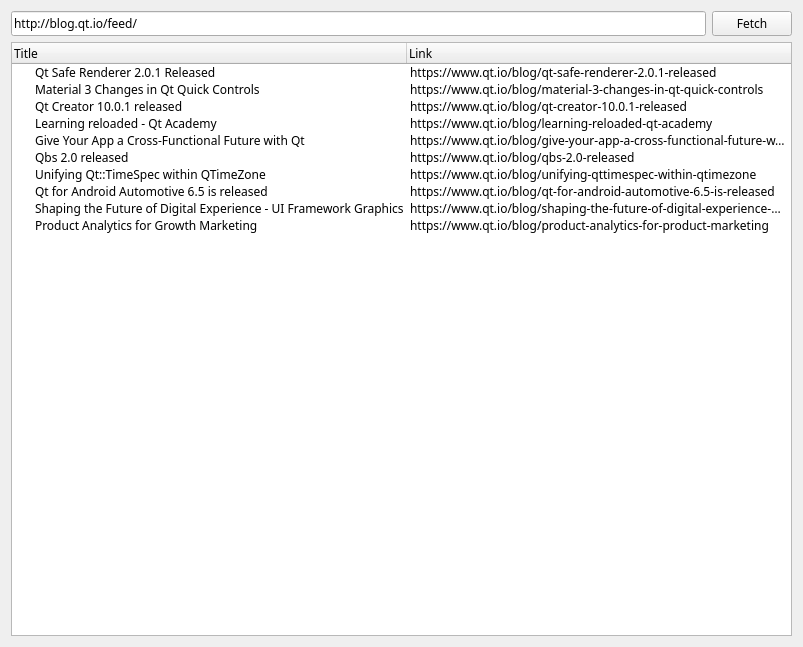

A minimal RSS listing application
A demonstration of how to fetch and display a network resource.
This example shows how to fetch a resource the user has requested and display data contained in the response, illustrated by an RSS listing application. (RDF Site Summary, or Really Simple Syndication, is a standard format for communicating updates to web sites. See https://www.rssboard.org/rss-specification for details.) The user inferface in the illustration is simple, as the focus of this example is on how to use networking, but naturally a more sophisticated interface would be wanted for a serious RSS reader.
The example also illustrates how to do asynchronous parsing of data as it is received, preserving state in member variables so that an incremental parser can consume chunks of data as they arrive over the network. Constituents of the parsed content may start in one chunk of data but not be completed until a later chunk, requiring the parser to retain state between calls.

The main program is fairly minimal. It simply instantiates a QApplication and the RSSListing widget, shows the latter and hands over control to the former. For the sake of illustration, it gives the widget the Qt blog's URL as default value for the resource to check.
The RSSListing class
The widget itself provides a simple user interface for specifying the URL to fetch and, once available updates are displayed, controlling the downloading of updated items. A QLineEdit provides for input of the URL, and a QTreeWidget for display of the results once fetched.
The widget downloads and parses the RSS (a form of XML) asynchronously, feeding the data to an XML reader as it arrives. This supports reading of very large data sources. Because the data is streamed from the network through the XML reader, there is no need to retain the full text of the XML in memory. In other context, a similar approach can allow the user to interrupt such incremental loading.
Construction
The constructor sets up the assorted components of the widget and connects their various signals to the slots it shall use to handle them.
The user interface consists of a line edit, a push button, and a list view widget. The line edit is used for entering the URL to fetch; the push button starts the process of fetching updates. The line edit is empty by default, but the constructor's caller can override that, as our main() has done. In any case, the user can replace the default with the URL of another RSS feed.
The list view shows the updated items reported in the RSS feed. Double-clicking on one of these sends its URL to the user's browser or other user agent using QDesktopServices::openUrl().
The slots
All slots are kept simple by delegating any hard work to private methods.
When the user completes input of a URL, either by clicking the "Fetch" button or by pressing the return key in the line edit, the fetch() slot disables the "Fetch" button and disables further editing of the line edit. It clears the display of available updates and delegates to get() the initiating of an HTTP GET request.
When data is received, the network reply triggers its readyRead() signal, which get() connects to the consumeData() slot. This checks the response got a successful status code and, if it did, calls parseXml() to consume the data.
If the network reply gets an error, this is delivered to the error() slot, which reports the error, clears the XML stream reader then disconnects from the reply and deletes it.
On completion (whether successful or otherwise) of a network reply, the finished() slot restores the UI to be ready to accept a new URL to fetch by re-enabling the line edit and "Fetch" button.
The get() method
The private get() method is used by the fetch() slot to initiate an HTTP GET request. It first clears the XML stream reader and, if a reply is currently active, disconnects and deletes it. If the URL it has been passed is valid, it asks the network access manager to GET it. It connects its relevant slots to signals of the resulting reply (if any) and sets up its XML stream reader to read data from the reply - a network reply object is also a QIODevice, from which data can be read.
The parseXml() method
When data is received, and thus made available to the XML stream reader, parseXml() reads from the XML stream, checking for item elements and, within them, title and link elements. It will use the rss:about attribute of an item as URL in the Link column of the tree-view, failing that the content of its link element; and it uses the content of the title element in the Title column of the tree-view. As each item element closes, its details are turned into a new row in the tree widget, with the extracted title and URL in the Title and Link columns.
The variables that keep track of the parsing state - linkString, titleString and currentTag - are member variables of the RSSListing class, even though they are only accessed from this method, because this method may be called repeatedly, as new data arrives, and one chunk of received data may start an element that isn't completed until a later chunk arrives. This enables the parser to operate asynchronously as the data arrives, instead of having to wait until all the data has arrived.
See also QNetworkReply and QXmlStreamReader.